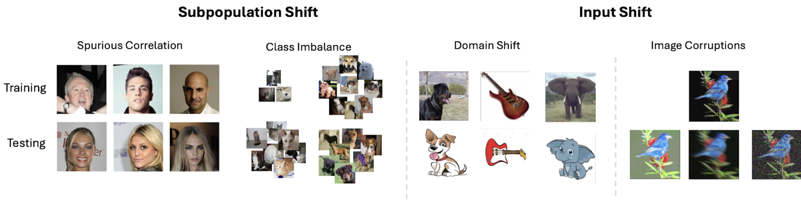

Reliably detecting when a deployed machine learning model is likely to fail on a given input is crucial for ensuring safe operation. In this work, we propose DECIDER (Debiasing Classifiers to Identify Errors Reliably), a novel approach that leverages priors from large language models (LLMs) and vision-language models (VLMs) to detect failures in image classification models. DECIDER utilizes LLMs to specify task-relevant core attributes and constructs a “debiased” version of the classifier by aligning its visual features to these core attributes using a VLM, and detects potential failure by measuring disagreement between the original and debiased models. In addition to proactively identifying samples on which the model would fail, DECIDER also provides human-interpretable explanations for failure through a novel attribute-ablation strategy. Through extensive experiments across diverse benchmarks spanning subpopulation shifts (spurious correlations, class imbalance) and covariate shifts (synthetic corruptions, domain shifts), DECIDER consistently achieves stateof-the-art failure detection performance, significantly outperforming baselines in terms of the overall Matthews correlation coefficient as well as failure and success recall.
Proactively detecting instances where a classification model is likely to fail (i.e., predict incorrect labels) is essential for deploying models safely in real-world applications. For example, in an ADAS system, misidentifying a pedestrian as a road sign, or in medical imaging, mistaking a tumor for a benign lesion, can lead to catastrophic outcomes. At a minimum, models should be able to accurately flag these high-risk samples.
Failures in vision models often stem from violations of data distribution assumptions made during training. Typically, data consists of both task-relevant core attributes and irrelevant nuisance attributes, neither of which are explicitly annotated. As a result, models may struggle to generalize if:
In the figure below, we illustrate different failure modes of vision models caused by the above described subpopulation shifts and covariate shifts. In the first example, consider the task where the goal is to identify hair color (blonde or not blonde). If the training set has more blonde men than women, and the model learns to rely on the spuriously correlated gender attribute to predict hair color, it will fail at test time. Similarly, in the second example, class imbalance in the training set may cause the model to poorly generalize to the underrepresented class. Finally, in the third and fourth cases, the model may fail to generalize to the test set due to covariate shifts that range from image corruptions to domain shifts. Note that, when the class-conditional distributions of core attributes themselves change between train and test data, it leads to the more challenging scenario of concept shifts, and we do not consider this in this work.
Given the critical importance and inherent challenges of this problem, there has been a significant increase in research efforts aimed at developing robust methods for failure detection in machine learning models. The most prevalent approach involves leveraging epistemic uncertainties of the model. Fundamentally, the problem of detecting failures is formulated as identifying an appropriate metric or scoring function (some notion of the epistemic uncertainity) that can effectively distinguish between samples where the model is likely to fail and those where it is likely to succeed. Some popular scoring mechanisms that have been proposed include: Maximum Softmax Probability, Predictive Entropy and Energy. These methods aim to utilize the uncertainty in the model's predictions, with the assumption that higher uncertainty may indicate a higher likelihood of failure. There are also other methods such as measuring disagreement between constituent members of an ensemble, through local manifold smoothness that are recently proposed.
However, the inherenet assumption that underpin these methods is that the classifier models are well-calibrated which may not always hold in practice. We will also demonstrate through experiments that these methods are not sufficient to accurately detect failures that arise due to more subtle but important shifts illustrated above. Furthemore, a cornerstone requirement for any failure detector is that it should also be able to explain the reasons for failure, which is a non-trivial task to be achieved by the methods mentioned above.
Lastly and more importantly, failure detection as it is currently posed is fundamentally limited because it is not only difficult, but also inefficient, to describe the nuisance attribute discrepancies mentioned in the previous section solely using visual features.
We now describe how to train PIM. We first begin by computing the similarity between the image features from PIM and the text encodings for each class-specific core attribute obtrained through the (frozen) CLIP text encoder. We then simply aggregate these similarities per class either by averaging them or by taking the maximum similarity score across the attributes for that class. We now have one scalar score for each class which we renormalize through softmax and train the PIM with cross-entropy loss. This is a much richer training objective than the naive mapping of images to coarse labels as it incorporates the additional information about the core attributes into the training process.
Failure detection using PIM
Once we have the PIM, we detect the potential failures of the original classifier by measuring the disagreement between PIM and the original classifier based on the discrepancy between their predictions. This disagreement score is calculated as the cross-entropy between the sample-level probability distributions between the two models. We first compute these scores on a held-out labeled validation set to determine the threshold that approximates the true accuracy on this dataset. At test time, we compute the score for each (unlabled) sample and compare it to the threshold to determine if that sample is likely to fail.Explaining failures
Now that we have the debiased classifier, that operates in the VLM latent space, we can also leverage it to provide human interpretable explanations for failure. We do so by performing attribute ablations on the debiased classifier to identify the optimal subset of attributes necessary for aligning the PIM's prediction probabilities with those of the original model. This allows us to elucidate the underlying reasons behind the discrepancies between predictions of the original and debiased classifiers. Specifically, our ablation strategy invoves iteratively adjusting the group of weights (uniformly initialized) corresponding to each attribute across all classes such that the KL divergence between the probability distributions obtained by the task model and those by PIM is minimized. In the figure below, we illustrate the DECIDER framework with left being the failure detector and right being the explanation generator.We evaluated failure detection capabilites of DECIDER, when the original classifier could potentially fail due to a diverse set of shifts during test-time including subpopulation shifts (spurious correlations and class imbalance), and covariate shifts (synthetic corruptions, and domain shifts). For the base model architecture, we considered ResNet-18, ResNet-50, and ViT-Base. We compared DECIDER against baseline methods like maximum softmax probability, predictive entropy, energy-based scores, and ensemble disagreement. To quantify the performance, we used Matthews Correlation Coefficient (MCC), Failure Recall (FR), and Success Recall (SR) as our evaluation metrics. Through our empirical analysis, we find that DECIDER consistently outperforms the baselines across all metrics on all the benchmarks. Please check our paper for the full results!
Using the procedure described earlier, we performed attribute ablations to generate explanations for model failures. In the figure below, we present a few examples. In the bottom-left example, the task is to correctly identify hair color (blonde or not). The original classifier incorrectly labels the image, while PIM accurately classifies it. We observe that our optimization process reduces the influence of attributes like "Browning Tresses" and "Red Highlights" on PIM's predictions to make the predictions more similar to the original model. This indicates that the biased original classifier may have overlooked these key attributes in its decision-making.
Similarly, in the top-right example, the original model misclassifies a cat as a dog. Our explanation shows that the classifier failed to focus on important core attributes like "Thin Whiskers," leading to the incorrect classification.
We believe these explanations are valuable for understanding model behavior in real-world scenarios. They can also help improve model reliability by guiding the selection of training samples that emphasize core attributes the original model overlooked.
@inproceedings{
subramanyam2024decider,
title={DECIDER: Leveraging Foundation Model Priors for Improved Model Failure Detection and Explanation},
author={Rakshith Subramanyam and Kowshik Thopalli and Vivek Narayanaswamy and Jayaraman J. Thiagarajan},
booktitle={European Conference on Computer Vision},
year={2024},
url={https://arxiv.org/pdf/2408.00331}
}